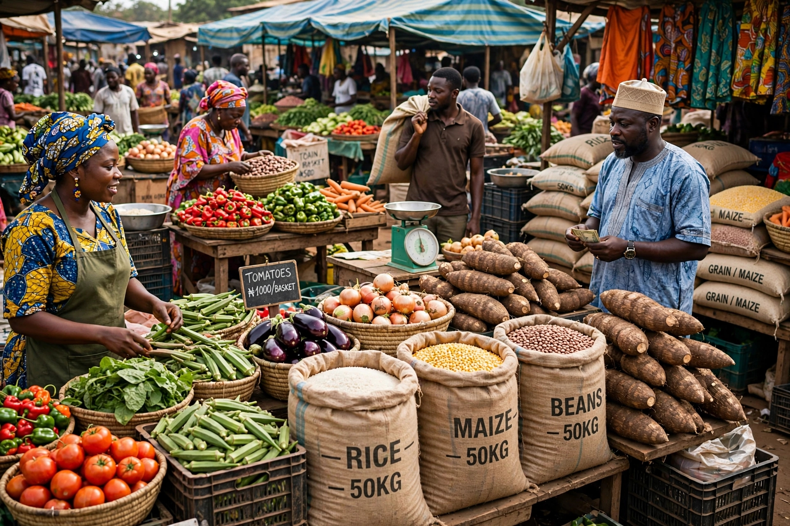

Agricultural Trade in Northern Markets Sees Steady Boost Ahead of Q4

Photo: Agro-allied trading activities across commercial hubs in Kaduna.
KADUNA — Commercial trading activities across major markets in northern Nigeria are experiencing a noticeable upward trajectory, driven by increased demand for agro-allied products and improving regional logistics as the fourth quarter approaches.
Local merchants and agricultural distributors report higher volumes of grain, tubers, and cash crops moving from farm clusters into central distribution markets within Kaduna Metropolis. Traders attribute the steady momentum to better harvest outputs and stronger buyer confidence.
"We are seeing consistent supply flows compared to previous quarters," notes a leading grain distributor at a major trading depot. "Demand from neighboring states remains high, which is keeping wholesale movement active and encouraging for local investors."
Economists monitoring regional commerce note that sustained supply chain stability and targeted investments in smallholder storage systems will be vital to maintaining this growth through the remainder of the business year.